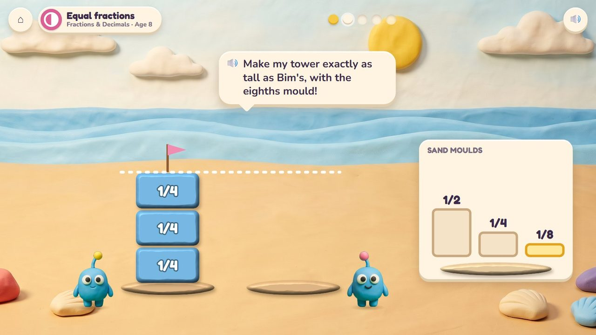
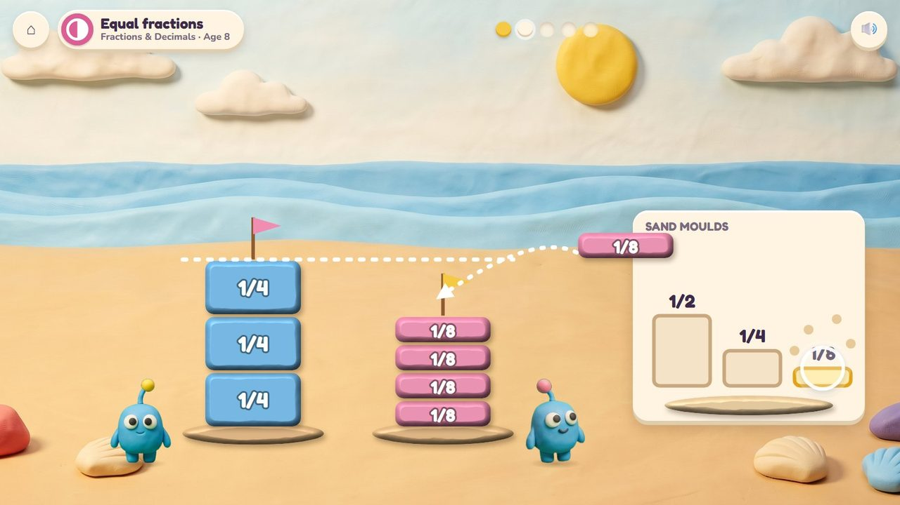
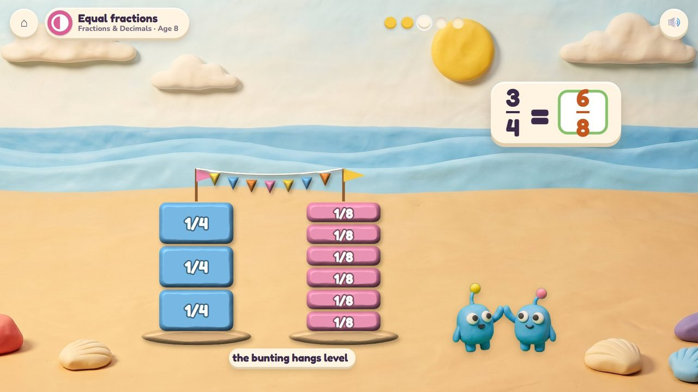
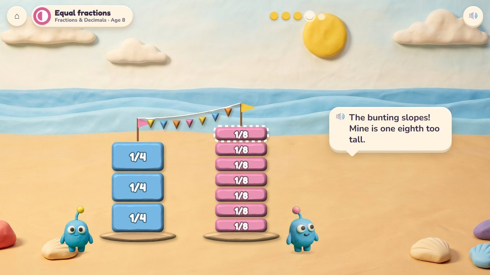
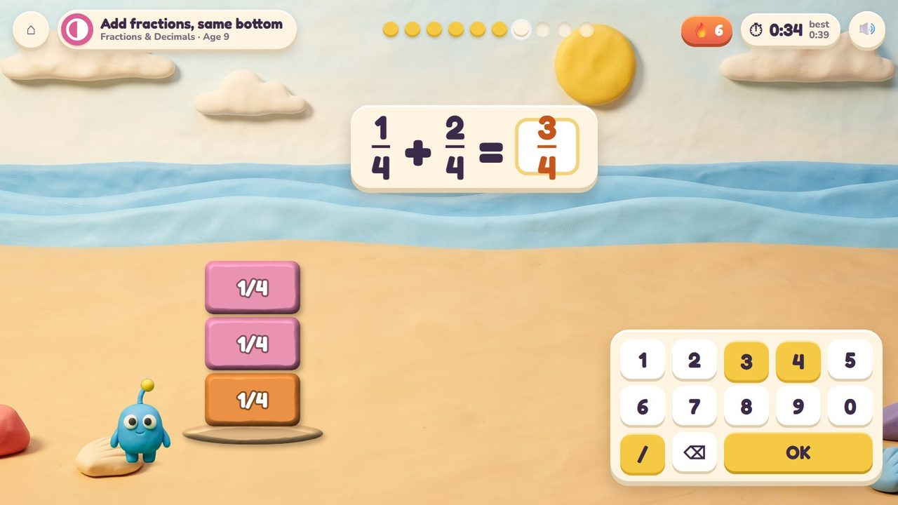
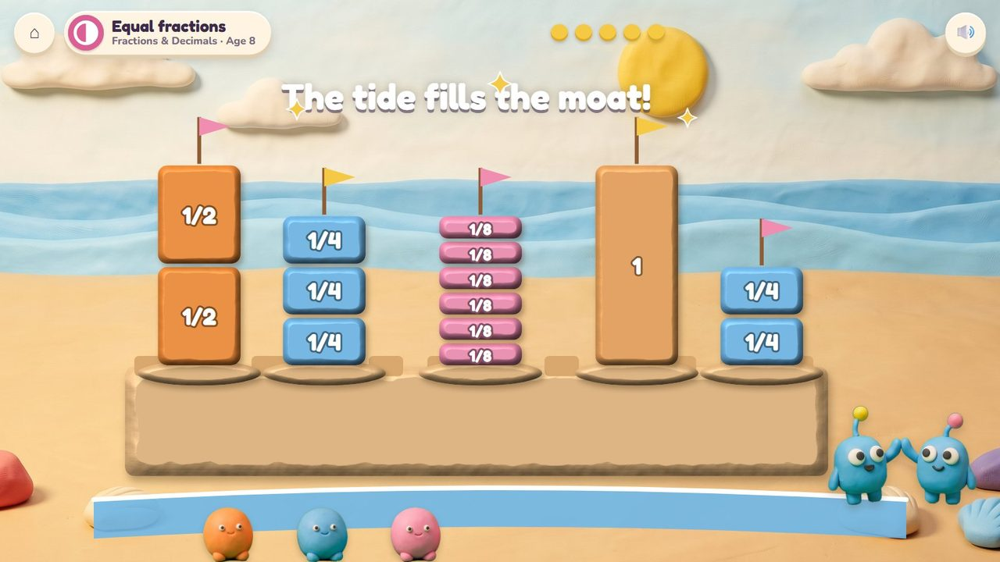
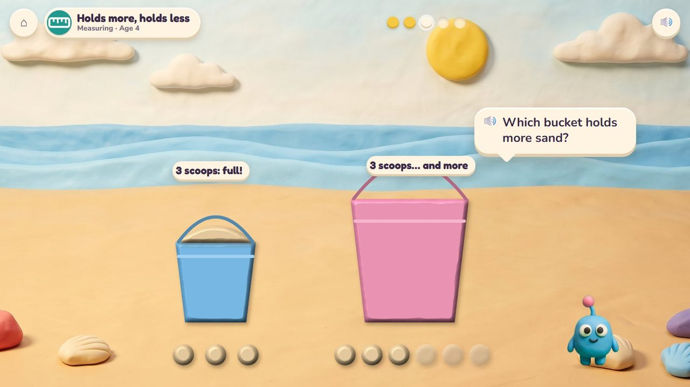
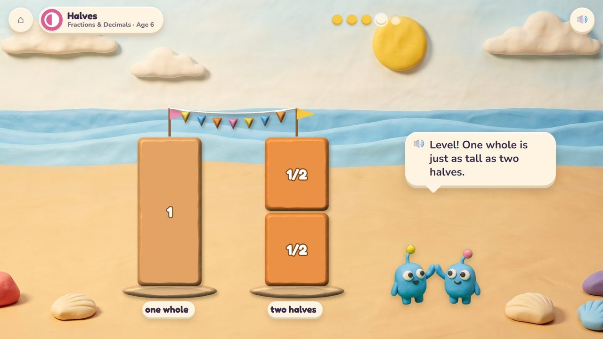
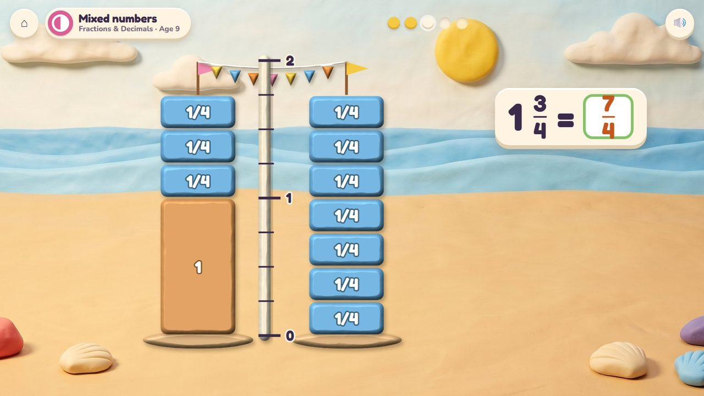
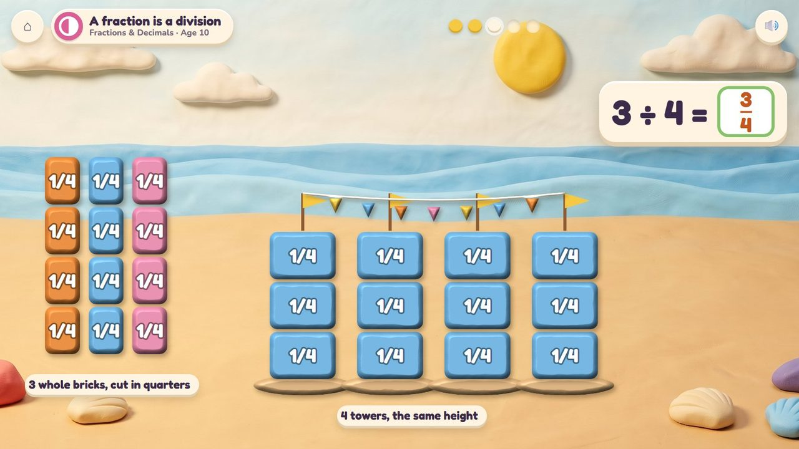

Press sand into fraction moulds and build the twins two towers exactly the same height.
50 lessons (31 taught here first, the rest practised here) in 4 topics:
Times & SharingFractions & DecimalsMeasuringPatterns & Graphs

Bim and Bam always have exactly the same, even their sandcastles. The child presses wet sand into a fraction mould (a whole, halves, thirds, quarters, sixths, eighths, tenths) and a brick pops out, then stacks the bricks into Bam's tower until it is as tall as Bim's. Then the bunting test: the twins string bunting between their flags, and it hangs level only when the towers are exactly the same. Round by round their castle grows, and at the end the tide fills the moat. For the little ones, sand buckets: full and empty, which holds more (counted in scoops), later litres.
Choose a mould, press the sand, stack the bricks, fill buckets with scoops.
The castle grows with every pair of towers, and the tide fills the moat.
A storyboard of the game in one lesson, drawn from the app's own clay pictures.
Bim's tower is three quarters; Bam has the eighths mould.
🔊 “Make my tower exactly as tall as Bim's, with the eighths mould!”

Press the sand into the mould: an eighth brick pops out. Four so far.

Six eighths: the bunting hangs level. 3/4 = 6/8.

Seven eighths: the bunting slopes, Bam's tower is taller.
🔊 “The bunting slopes! Mine is one eighth too tall.”

1/4 + 2/4: type 3/4 with the fraction bar. Timed.

The castle has grown; the tide fills the moat.
A tower is shown: type its fraction, or the sum of its parts (1/4 + 2/4), with the fraction bar on the pad. Ten questions at 6-7, a 60-second round from 8; your time and your best on screen; only right answers count; a miss shows the answer and comes back later. No clock under 6.
The badge at the top left says the topic, the lesson and the age.

Three scoops fill the blue bucket; the pink one takes more.

One whole brick is as tall as two halves: the bunting is level.

On the measuring pole: one and three quarters is as tall as seven quarters.

Three whole bricks shared by four towers: each tower gets 3/4.
| Age 3Pre-school | Full and empty buckets. |
| Age 4Pre-K | Holds more, holds less: count the scoops. |
| Age 5Kindergarten | Compare what it holds. |
| Age 6Grade 1 | Halves and quarters: one whole brick is two halves; more parts, smaller parts. |
| Age 7Grade 2 | A whole is 2 halves, 3 thirds or 4 quarters. |
| Age 8Grade 3 | Unit fractions, 3/4, equal fractions (3/4 is as tall as 6/8), comparing fractions, litres. |
| Age 9Grade 4 | Adding and taking away fractions; mixed numbers on the pole (1 3/4 = 7/4); tenths and hundredths. |
| Age 10Grade 5 | Different bottoms; a fraction is a division (3 bricks for 4 towers); sharing bricks; millilitres and litres. |
a whole, then halves, quarters, thirds, sixths, eighths and tenths
match a tower, add bricks, compare towers, share bricks, fill buckets
the dashed line shows the height to reach; the pole is a number line; after a miss the bricks are counted
pressing and stacking; the number pad with a fraction bar
Age by age they are on the full list; here grouped by topic (the first activity named teaches a lesson, the others practise it).
3.OA.2Poke Pals · Sandcastle Twins3.OA.3Poke Pals · Sandcastle Twins4.OA.3Poke Pals · Sandcastle Twins4.NBT.6Poke Pals · Sandcastle Twins1.G.3Sea Wall · Sandcastle Twins1.G.3Sea Wall · Sandcastle Twins1.G.3Sea Wall · Sandcastle Twins2.G.3Sea Wall · Sandcastle Twins2.G.3Sandcastle Twins · Sea Wall3.NF.1Sandcastle Twins · Sea Wall3.NF.1Sandcastle Twins · Sea Wall3.NF.2Number Lift · Sandcastle Twins3.NF.3Sandcastle Twins · Seesaw Twins3.NF.3Sandcastle Twins3.NF.3Sandcastle Twins · Seesaw Twins3.NF.3Sandcastle Twins4.NF.1Sandcastle Twins · Sea Wall4.NF.2Sandcastle Twins · Number Lift4.NF.2Sandcastle Twins · Seesaw Twins4.NF.3Sandcastle Twins4.NF.3Sandcastle Twins4.NF.3Sandcastle Twins · Number Lift4.NF.3Sandcastle Twins · Number Lift4.NF.3Sandcastle Twins4.NF.3Sandcastle Twins · Fishing Jetty4.NF.4Sandcastle Twins · Volcano Pop4.NF.5Sandcastle Twins · Treasure Shop4.NF.6Number Lift · Sandcastle Twins5.NBT.7Treasure Shop · Sandcastle Twins5.NF.1Sandcastle Twins5.NF.1Sandcastle Twins5.NF.1Sandcastle Twins · Fishing Jetty5.NF.2Sandcastle Twins · Fishing Jetty5.NF.3Sandcastle Twins · Poke Pals5.NF.4Garden Beds · Sandcastle Twins5.NF.5Seesaw Twins · Sandcastle Twins5.NF.6Sandcastle Twins · Garden Beds5.NF.7Sandcastle Twins5.NF.7Sandcastle Twins5.NF.7Sandcastle Twinsearly yearsSandcastle Twinsearly yearsSandcastle TwinsK.MD.1Fishing Jetty · Seesaw Twins · Sandcastle TwinsK.MD.2Sandcastle Twins3.MD.2Sandcastle Twins3.MD.2Seesaw Twins · Sandcastle Twins4.MD.1Fishing Jetty · Seesaw Twins · Sandcastle Twins4.MD.2Fishing Jetty · Sandcastle Twins · Seesaw Twins5.MD.1Fishing Jetty · Sandcastle Twins · Seesaw Twins5.MD.2Fishing Jetty · Sandcastle Twins